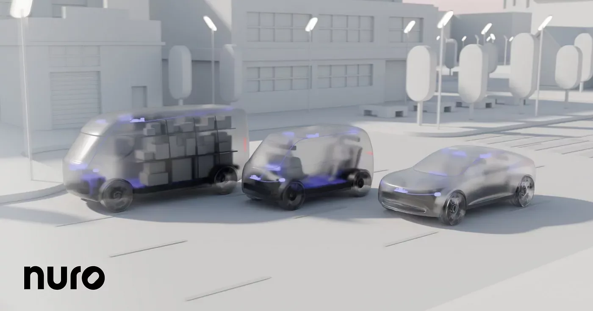
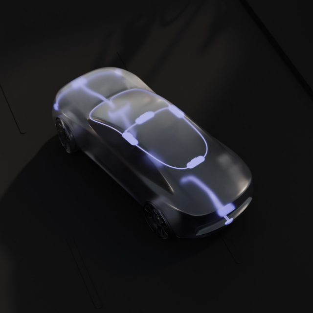

Nuroのミッションは、ロボティクスを通じて日常生活をより豊かにすることです。私たちの歩みはラストマイル配送から始まりましたが、常により広いインパクトを視野に入れてきました。そして今、私たちの自律走行システム「Nuro Driver™」は、個人の移動手段をも変革する準備が整いました。すべての道路で、すべての乗り物に対応する——それが私たちのビジョンです。
この技術の進化に伴い、私たちはビジネスモデルも拡張します。垂直統合型のモデルから、自動車OEMやモビリティプロバイダーへNuro Driverをライセンス提供するモデルへとシフトします。このシフトは、業界の成熟を反映しています。垂直統合はもはや唯一の道ではなく、強力なパートナーシップを結ぶための生態系がいまや熟しているのです。
新しいモデルは、顧客の自律化ロードマップを加速させると同時に、開発コスト全体を大幅に削減します。自動車・モビリティセクター全体にわたる戦略的パートナーシップを構築することで、私たちの技術を個人用車両、ライドヘイリングサービス、そして商用フリートへと展開していきます。これが、自動車・モビリティ業界が自律化を解決するための最も効率的かつ持続可能な方法だと、私たちは確信しています。

このアプローチを支えているのは、Nuroの急速に進化するソフトウェアおよびハードウェア技術です。拡張された自律走行機能は、市街地の路面道路から高速道路まで対応し、第4世代のNuro Driverハードウェアは、複数の車両タイプに対応した最大レベル4（L4）のAIファーストな自律走行を、劇的に削減されたコストで実現します。この組み合わせは、L4対応の消費者向け車両という業界にとって夢のような目標への扉を開きます。
これらの技術的進歩と、自律走行に起因する事故ゼロという実績のもと100万マイル以上の自律走行を達成した確かなトラックレコードにより、Nuroは業界内でも最も効率的なビジネスモデルを持つトップクラスの技術プロバイダーとしての地位を確立していると考えています。
私たちが目指す未来では、より安全な道路によって何十万もの命が救われ、数百万トンの排出ガスが削減され、そして何十億時間もの時間が人々に返還されます。自律化が民主化され、モノ・人・社会を前進させ、人生の最良の瞬間をすべての人がより身近に享受できるようになる世界——それが私たちのビジョンです。
今後数ヶ月のうちに、「すべての人のための自律化（Autonomy for All）」に向けた道のりにおける、エキサイティングな新しい技術的マイルストーンとパートナーシップをご発表する予定です。

メディア報道
-
TechCrunch（2025年4月9日）
「Nuroの1億600万ドル調達、配送ロボットから自律走行技術ライセンスへのシフトを後押し」 -
The Verge（2024年9月11日）
「Nuro、ロボタクシーおよび個人所有の自律走行車へ参入を拡大」 -
Forbes（2024年9月11日）
「Nuro、配送ロボットから自律走行ソフトウェアのライセンスビジネスへピボット」